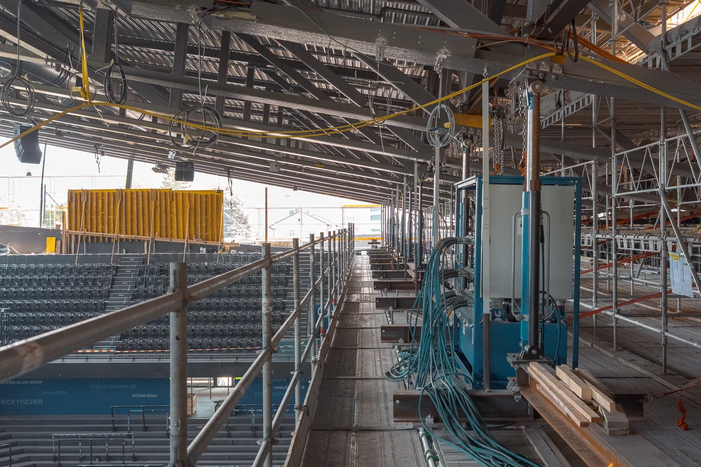
Die innerstädtisch enge Situation rund um die OYM hall liess eine Erweiterung primär nach Norden zu, in Richtung des bestehenden Fussballplatzes. Ziel der Erweiterung war, zusätzliche Sitzplätze und attraktive Gastronomiezonen zu schaffen und gleichzeitig die architektonische Identität der bestehenden Halle zu stärken.
Dafür wurde der nördliche Teil des bestehenden Daches angehoben und anschliessend nach Norden verlängert. Die neue Dachneigung orientiert sich am ursprünglichen Wettbewerbsentwurf von 2004 und führt dessen charakteristische Geometrie konsequent weiter.
Die bauliche Intervention glich einer «Operation am offenen Herzen»: Da der EVZ während der Saison weiterhin im eigenen Stadion spielte, konnte der Eingriff nur während der Sommerpause erfolgen. Im Juli 2026 wurde das bestehende Dach am Tiefpunkt in der Hallenmitte durchtrennt und die Nordhälfte mit insgesamt 29 Hydraulikpressen innerhalb eines Tages um 4.10 m angehoben. Das rund 520 Tonnen schwere Dach wurde damit präzise in seine neue Position überführt.
Während der anschliessenden Spielsaison 2026/27 wird die Nordseite (Modul Nord) verlängert und angebaut. Die zweite Etappe mit den verbleibenden Flächen wird im September 2027 abgeschlossen und der Bauherrschaft übergeben.
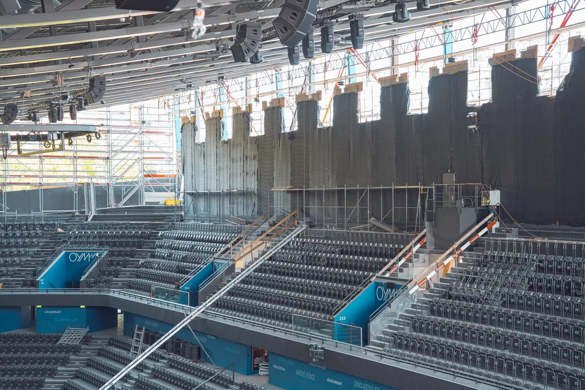
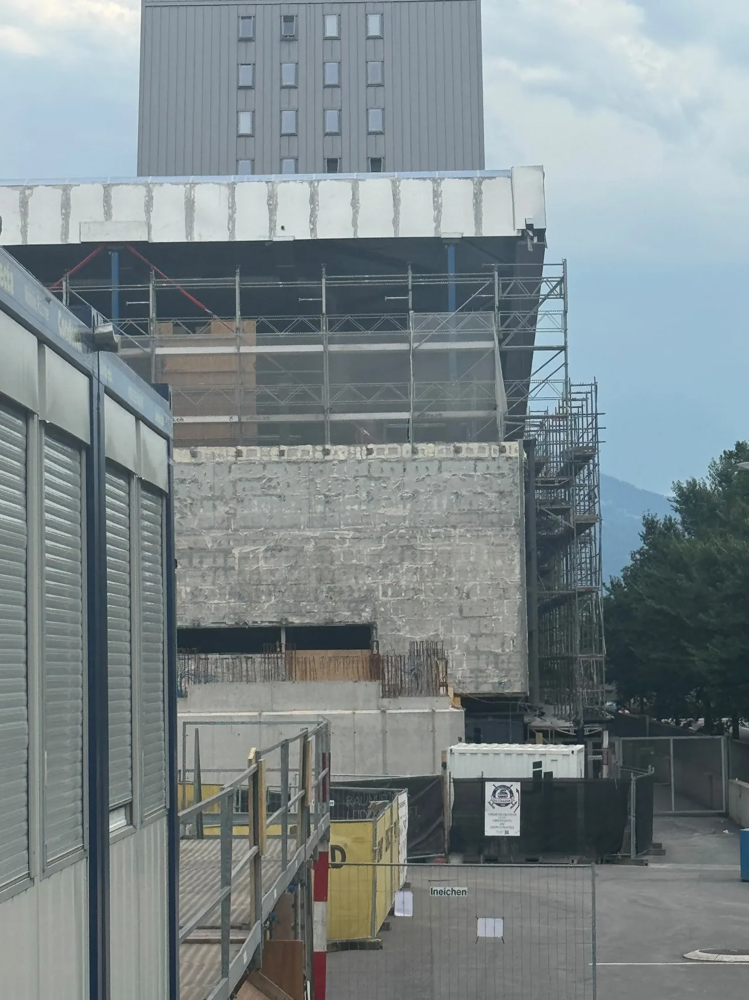
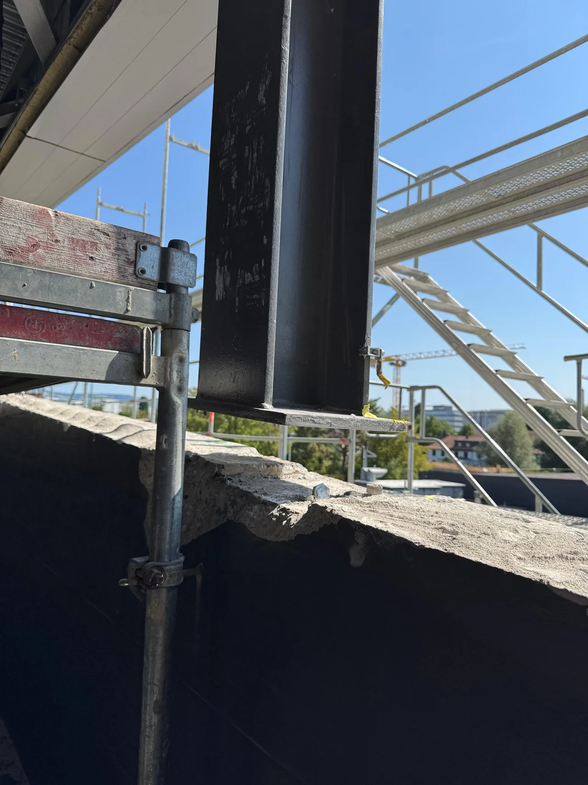
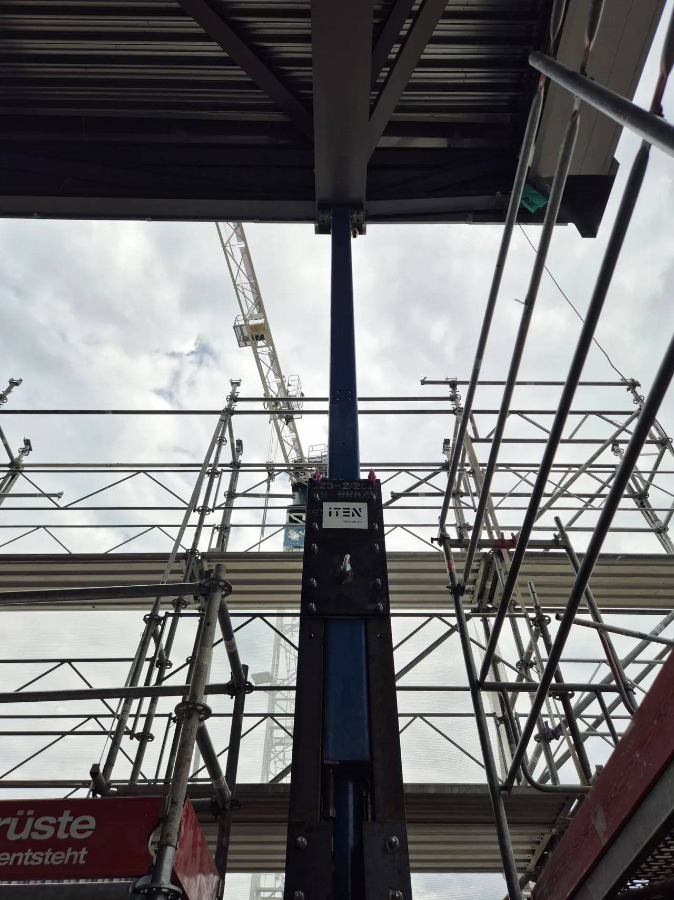

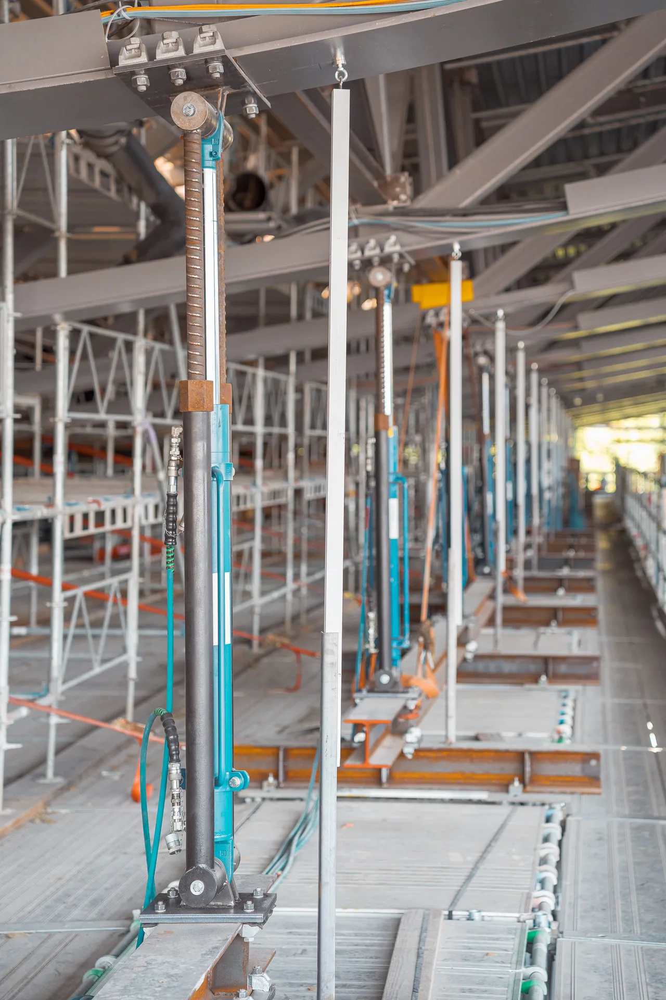
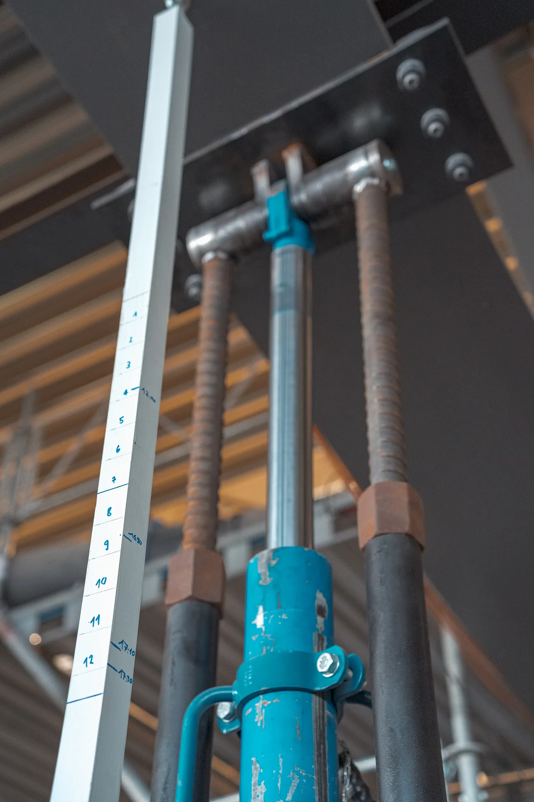
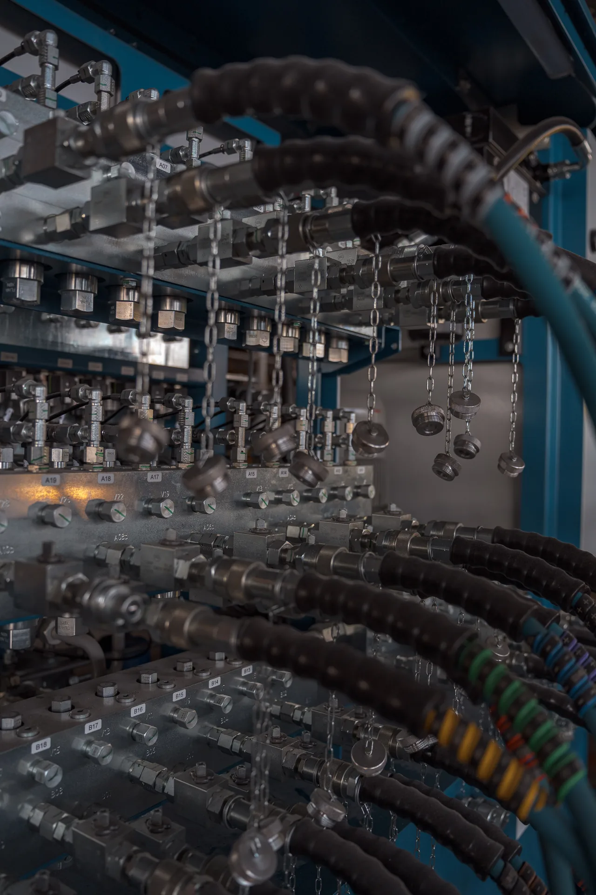
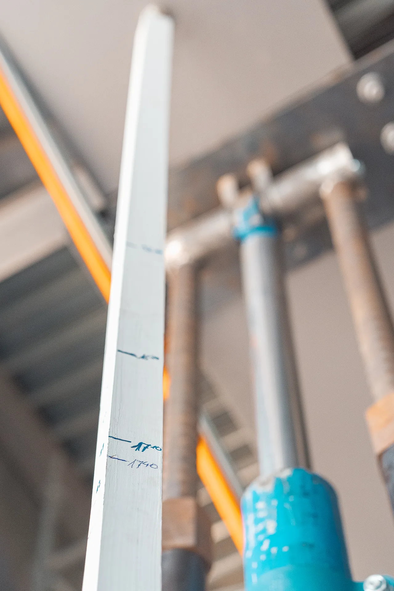
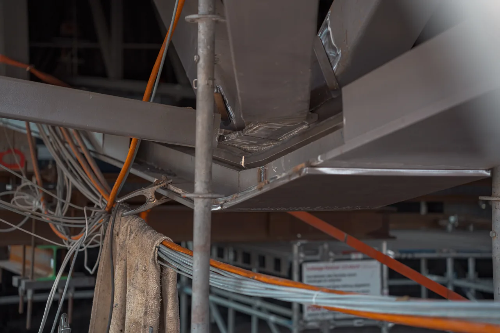
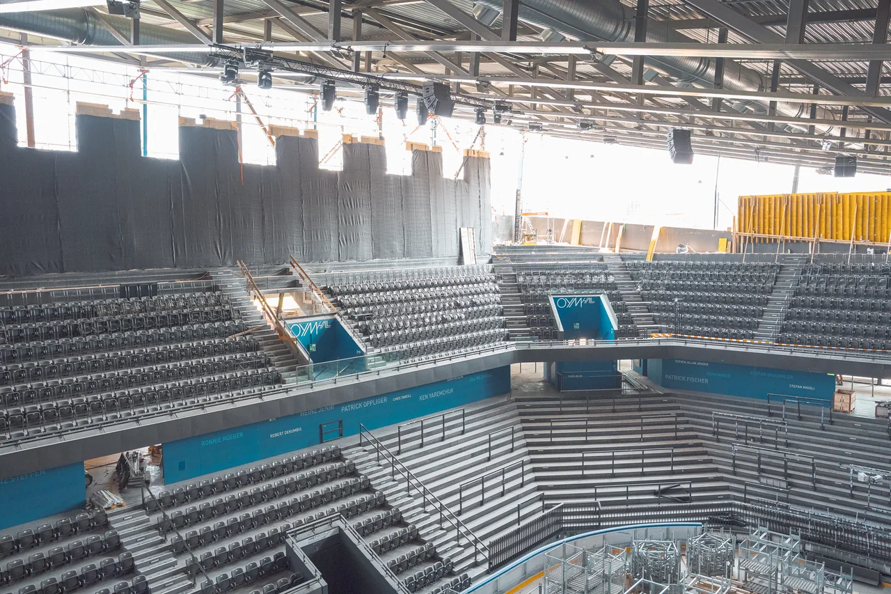
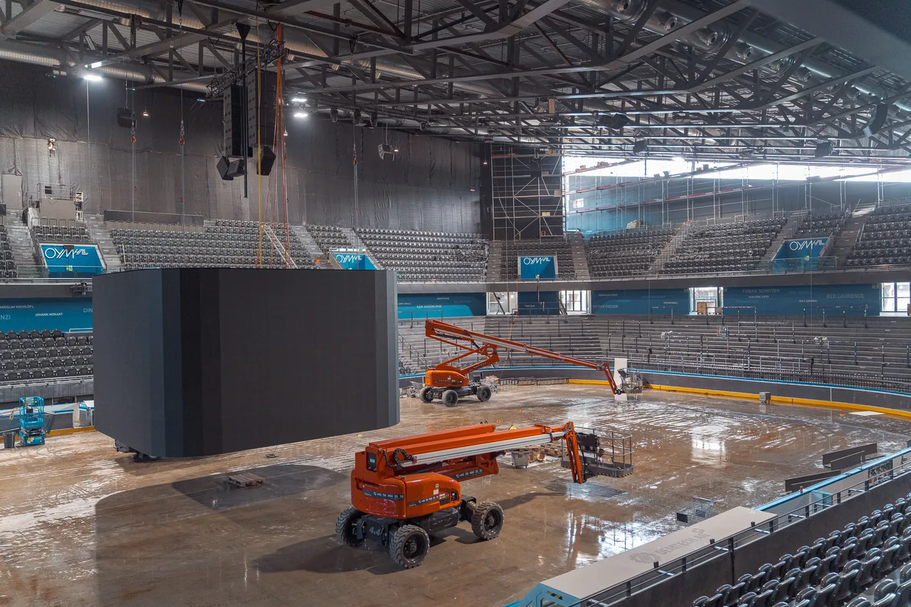
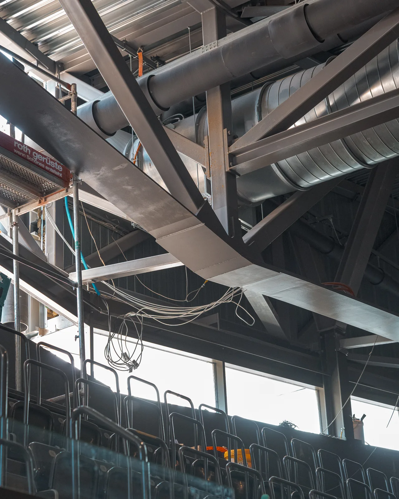
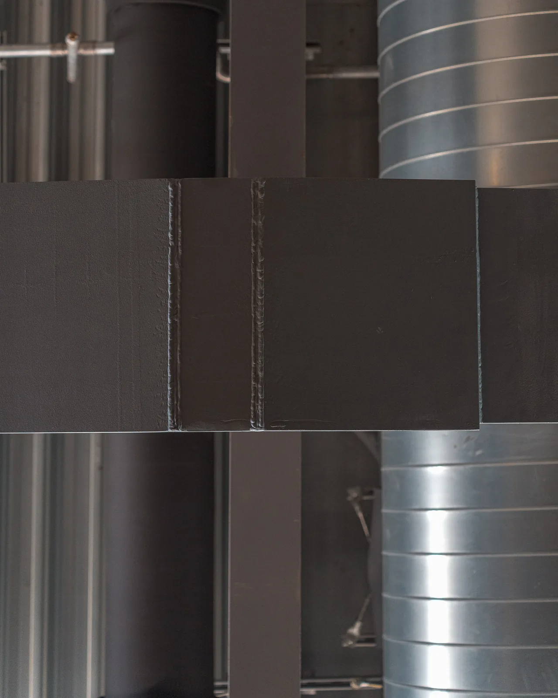